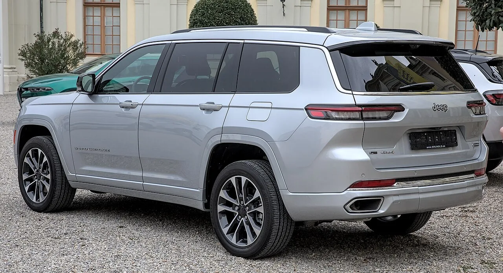

▲ 지프 그랜드 체로키. 2026년형부터 사전 챔버 점화를 쓰는 2.0L 4기통이 들어간다
지프 그랜드 체로키에 새 엔진이 들어갑니다. 2.0리터 터보 4기통으로, 기존 3.6리터 펜타스타 V6를 점차 대체합니다.
배기량이 거의 절반으로 줄었으니 성능도 낮아질 것 같지만, 결과는 반대입니다. 324마력으로 V6보다 31마력 높고, 토크는 더 큰 폭으로 앞섭니다.
이걸 가능하게 한 것이 사전 챔버 점화입니다. F1과 페라리 레이싱 엔진에서 검증된 기술입니다.
1. 방을 하나 더 만든다
일반적인 가솔린 엔진은 이렇게 작동합니다. 실린더 안에 연료와 공기를 섞어 넣고, 스파크 플러그가 한 점에서 불꽃을 튀깁니다. 그 불꽃이 화염으로 퍼져나가며 혼합기를 태웁니다.
문제는 불이 한 점에서 시작한다는 것입니다. 화염이 실린더 구석까지 퍼지는 데 시간이 걸리고, 그사이 아직 안 탄 혼합기가 압력과 열에 못 이겨 제멋대로 폭발하기도 합니다. 이것이 노킹입니다. 노킹을 피하려면 압축비를 낮추거나 고급 휘발유를 써야 하고, 그만큼 효율이 떨어집니다.
사전 챔버 점화는 이 구조를 바꿉니다. 실린더 헤드 중앙에 연필 지우개 크기의 구리 돔을 만들어 작은 방을 하나 더 둡니다. 그 안에는 별도의 연료 분사기와 스파크 플러그가 있습니다.
작동 순서는 이렇습니다. ①작은 방에 연료를 채운다 → ②거기서 먼저 점화한다 → ③구멍들을 통해 불꽃 제트가 뿜어져 나간다 → ④주 연소실 여러 곳에서 동시에 불이 붙는다.
핵심은 마지막 단계입니다. 한 점이 아니라 여러 지점에서 동시에 타기 시작하면 연소가 훨씬 빠르고 완전해집니다. 노킹이 생길 틈이 줄어듭니다.
| 항목 | 일반 스파크 점화 | 사전 챔버 점화(TJI) |
|---|---|---|
| 점화 지점 | 1곳 | 여러 곳 동시 |
| 연소 속도 | 상대적으로 느림 | 빠름 |
| 노킹 위험 | 높음 | 낮음 |
| 연료 요구 | 고급 휘발유 필요할 수 있음 | 일반 휘발유(87옥탄) |
| 엔진 온도 | 높음 | 낮음 |

▲ 그랜드 체로키 L. 신형 4기통은 3.6L V6를 점차 대체한다
2. 숫자로 확인되는 결과
기술 설명보다 제원 비교가 직관적입니다.
| 항목 | 허리케인 4 터보 | 펜타스타 V6 |
|---|---|---|
| 배기량 | 2.0L 4기통 | 3.6L V6 |
| 최고출력 | 324마력 | 293마력 |
| 최대토크 | 332lb-ft | 260lb-ft |
| 열효율 | 40% 이상 | - |
| 출력 밀도 | 리터당 162마력 | - |
배기량은 44% 줄었는데 출력은 31마력 늘었고, 토크는 72lb-ft 앞섭니다. 리터당 162마력이라는 출력 밀도는 헬캣 리디 엔진보다도 26% 높은 수치입니다.
열효율 40% 이상이라는 숫자도 눈여겨볼 만합니다. 열효율은 연료가 가진 에너지 중 실제로 바퀴를 굴리는 힘으로 바뀌는 비율입니다. 일반적인 가솔린 엔진은 30%대에 머무는 경우가 많고, 40%를 넘기는 것은 상당한 성취로 평가됩니다.
실사용에서는 같은 연료비로 10% 적은 연료를 쓰면서 20% 더 큰 출력을 낸다는 설명입니다. EPA 기준 연간 연료비는 두 엔진이 같은 수준으로 산정됐습니다.
3. F1에서 SUV까지 20년
이 기술의 뿌리는 2000년대 중반 F1입니다. 당시 레이싱 엔진은 규정으로 연료 사용량이 제한되기 시작했고, 같은 연료로 더 큰 힘을 내는 방법이 절실했습니다. 사전 챔버 점화가 그 답 중 하나였습니다.
레이스에서 검증된 기술이 도로용 차로 넘어온 첫 사례는 마세라티 MC20의 네투노 V6였습니다. 슈퍼카에 먼저 들어간 뒤, 이제 대량 생산 SUV 엔진으로 내려온 것입니다.
20년이 걸린 이유는 축소와 원가였습니다. F1 엔진은 정비 주기가 짧고 비용 제약이 상대적으로 덜합니다. 반면 양산차 엔진은 10년 이상 문제없이 돌아야 하고, 값도 싸야 합니다. 연필 지우개 크기의 사전 챔버를 대량 생산 가능한 형태로 줄이는 것이 핵심 과제였습니다.
이 흐름은 자동차 기술이 전파되는 전형적인 경로입니다. 레이스에서 시작해 슈퍼카를 거쳐 양산차로 내려옵니다. 터보차저와 카본 브레이크, 듀얼클러치 변속기가 모두 같은 길을 걸었습니다.
4. 하이브리드 없이 규제를 넘는 방법
이 엔진이 갖는 전략적 의미는 전동화 없이 효율을 올렸다는 점입니다.
배출가스와 연비 규제를 맞추는 가장 확실한 방법은 하이브리드나 전기차입니다. 문제는 비용입니다. 배터리와 모터, 제어 시스템이 들어가면 차값이 오르고, 무게도 늘어납니다.
허리케인 4는 다른 접근입니다. 연소 자체를 개선해 배출가스를 줄입니다. 하이브리드 부품이 없으니 원가 부담이 작고, 무게도 늘지 않습니다. 여기에 엔진 온도가 낮아져 부품 내구성이 좋아지고, 냉간 시동 성능도 개선됩니다.
일반 휘발유(87옥탄)를 쓸 수 있다는 점도 실사용 관점에서 중요합니다. 고성능 터보 엔진 중에는 고급 휘발유를 요구하는 경우가 많은데, 사전 챔버 점화가 노킹 위험을 낮춰 이를 피했습니다.
같은 문제를 다른 방식으로 푼 사례도 있습니다. 닛산은 아예 다운사이징을 거부하고 3.8리터 자연흡기 V6를 유지했고, GMC는 6.2리터 자연흡기 V8을 그대로 뒀습니다.
5. 정리 — 내연기관은 아직 끝나지 않았다
정리하면 지프 허리케인 4 터보는 F1에서 검증된 사전 챔버 점화를 양산 4기통에 적용해, 배기량이 절반인 상태로 3.6리터 V6를 출력·토크 모두에서 앞섰습니다. 열효율은 40%를 넘겼고, 일반 휘발유를 씁니다.
전동화가 화두인 시점에 내연기관 개선에 20년을 투자한 결과물이 나온 셈입니다. 전기차 수요가 예상보다 느리게 늘고 하이브리드로 수요가 몰리는 지금, 이런 엔진의 가치는 오히려 커집니다.
다만 국내 도입 여부와 시점은 확인되지 않았습니다. 현재까지 공개된 것은 2026년형 그랜드 체로키부터 적용된다는 내용입니다.